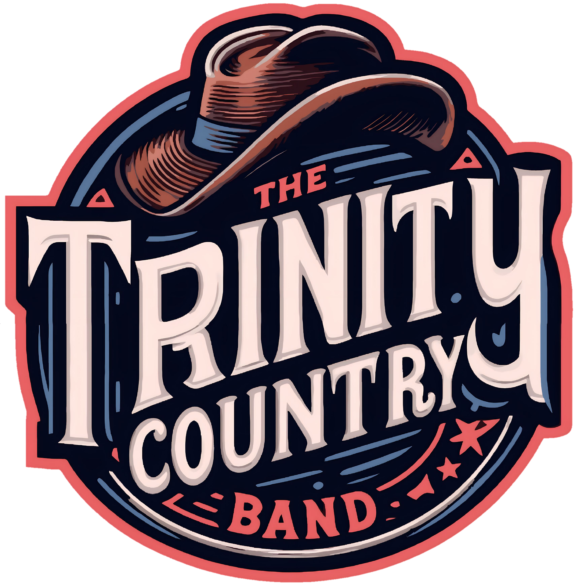

Stage Experience
Festivais, programações públicas e grandes eventos. Presença de palco, repertório cantável e clima de festival.

A The Trinity Country Band é uma banda da Serra Gaúcha, no Rio Grande do Sul, dedicada ao Country norte-americano, Country Rock e Southern Rock. O repertório cruza clássicos cantáveis, guitarras marcantes e a energia de um show feito para acontecer diante do público.
A Trinity se apresenta em festivais, eventos municipais, encontros de motociclistas e veículos antigos, pubs e eventos particulares. Cada palco pede uma entrega própria; o som continua sendo Trinity.
Festivais, programações públicas e grandes eventos. Presença de palco, repertório cantável e clima de festival.
Encontros de motociclistas e eventos de estrada. Country Rock e Southern Rock com energia de ponta a ponta.
Pubs e casas estruturadas. Duas horas de Country, bar cheio e público perto do palco.
Casamentos e eventos particulares. Repertório e produção alinhados com a ocasião, sem perder a identidade da banda.
Encontre a banda nos próximos palcos divulgados.
Programação sujeita a alterações pelos organizadores. Novas datas são divulgadas no Instagram da banda.
Ver agenda no Instagram ↗Festivais, encontros de estrada e celebrações que mostram a presença da Trinity na Serra Gaúcha e em outras regiões do Estado.
A Trinity tocou na 4ª edição do encontro de veículos antigos, conforme cobertura publicada após o evento.
Ler cobertura ↗A Trinity integrou a programação musical do 34º FestiQueijo.
Ver programação ↗Presença na programação de abertura da edição de 2026, depois de integrar o Palco Fenavinho em 2023.
Ver cobertura ↗Show da Trinity no encontro sul-americano de motociclistas, promovido pelo Bicho Véio Moto Clube.
A Trinity passou pela 1ª, 2ª e 3ª edições do festival custom; o organizador registrou o retorno em 2026.
Ver organizador ↗Apresentações da banda na 1ª e na 2ª edição do festival de motociclismo.
Ver festival ↗A Trinity integrou a programação do aniversário da casa.
Ver programação ↗Show da Trinity na experiência de fogo de chão da Ecker Parrillas.
A banda integrou a programação da 8ª edição da Oktoberfest promovida pela Danken Cervejaria.
Ver cobertura ↗A banda participou da abertura do espaço e compartilhou o registro da noite.
Ver registro ↗Apresentação da Trinity registrada na agenda oficial de eventos do município.
Ver agenda ↗A banda abriu uma edição do encontro de motociclistas da cidade.
Apresentação da Trinity no Festival Internacional do Churrasco, no Jockey Club do Rio Grande do Sul.
Show na programação municipal, com registro ao vivo publicado pela banda.
Ver programação ↗Apresentação da Trinity nas comemorações de aniversário do município.
Ver programação ↗Show da Trinity na Vila Natalina, dentro da programação cultural promovida pela Prefeitura de Garibaldi.
Ver programação ↗A Trinity participou de diversas edições do encontro. Há registros da 7ª edição, em 2023, de uma apresentação em 2024 e da 10ª edição, em 2026.
Ver programação de 2023 ↗Um dos primeiros palcos da banda, registrado em reportagem publicada após o evento.
Ler reportagem ↗Texas Country Bar, em Passo Fundo · Bar Bacon Honky Tonk, no Vale dos Vinhedos · Vila Country do Stone Hall Garden, em Farroupilha · Pinga Fogo, em Bento Gonçalves · Sabrage Jardim e Gastronomia, no Vale dos Vinhedos · Blauth Bier, em Farroupilha · LAB Experiências, em Sobradinho · Casa Giordani.
Três músicas para conhecer o som da banda. Os vídeos abrem no canal da Trinity no YouTube.
Respostas diretas sobre os estilos, a formação, o repertório e a contratação da banda.
Country Rock é a combinação da linguagem musical do country norte-americano com a estrutura, a energia e os instrumentos do rock. O estilo preserva temas como estrada e vida real, mas acrescenta guitarras elétricas, bateria mais presente e maior intensidade de palco.
Southern Rock, também chamado de rock sulista, é um gênero desenvolvido no sul dos Estados Unidos a partir da mistura de rock, blues e country. Sua sonoridade costuma apresentar guitarras marcantes, improvisação, vocais fortes e temas ligados à estrada, liberdade e cotidiano.
O Country mantém maior proximidade com a tradição musical norte-americana e com a narrativa das canções. O Country Rock combina essa linguagem com a estrutura e a energia do rock. O Southern Rock acrescenta forte influência do blues, riffs mais pesados e maior destaque para guitarras e performances instrumentais.
Sim. “Rock sulista” é a tradução normalmente utilizada no Brasil para Southern Rock. A expressão se refere à origem do gênero no sul dos Estados Unidos, e não ao sul do Brasil.
Guitarras elétricas, baixo e bateria formam a base do gênero. Piano, órgão, teclados, violão, gaita e outros instrumentos também aparecem com frequência. A Trinity acrescenta saxofone à formação, ampliando sua identidade sonora.
Sim. O blues está presente nos riffs, solos, escalas, improvisações e na forma de interpretação vocal. Essa influência ajuda a diferenciar o Southern Rock de estilos mais próximos do country tradicional.
Sim. O gênero está presente em pubs, festivais, encontros de motociclistas e eventos automotivos. Sua ligação com estrada, liberdade e música tocada ao vivo encontra afinidade com parte do público gaúcho.
Embora tenha surgido nos Estados Unidos, o gênero se conecta com elementos presentes no Rio Grande do Sul: estrada, interior, encontros de motociclistas, bares de rock e eventos ligados ao universo automotivo. A relação acontece pelo estilo de vida, não pela origem geográfica.
A conexão vem de temas compartilhados, como estrada, liberdade, deslocamento e vida real. Além disso, a força das guitarras e a energia das apresentações funcionam especialmente bem em encontros de motociclistas e eventos ao ar livre.
A The Trinity Country Band é uma banda da Serra Gaúcha dedicada ao Country norte-americano, Country Rock e Southern Rock. A formação combina guitarras, baixo, bateria, teclados, saxofone e vocais.
A banda é da Serra Gaúcha, no Rio Grande do Sul. Sua atuação não está limitada a uma única cidade: a Trinity se apresenta em diferentes municípios e regiões do estado.
A The Trinity Country Band foi formada em 2019. Desde então, construiu sua trajetória em pubs, festivais, eventos públicos, encontros de motociclistas e eventos automotivos.
Não. A Trinity não presta tributo a um único artista. O repertório reúne músicas de diferentes nomes e períodos, selecionadas dentro de um território musical definido e interpretadas com a identidade da banda.
Não. O repertório atravessa Country norte-americano, Country Rock, Southern Rock e músicas relacionadas ao blues rock e ao rock de estrada.
A identidade da banda combina o Country norte-americano com a energia do Country Rock e do Southern Rock. O resultado é um show de guitarras, piano, saxofone e repertório reconhecido por diferentes gerações.
A formação atual é composta por Marco Esteban, voz principal e saxofone; Fernando Cainelli, guitarra slide e backing vocal; Erni Caldato, guitarra; Renato Da Campo, baixo; Leandro “Leli” Zanesco, teclados; e César Brandelli, bateria.
A formação reúne voz principal, saxofone, duas guitarras, baixo, bateria e teclados. Essa combinação permite trabalhar desde músicas mais tradicionais até arranjos com maior peso de rock.
A Trinity trabalha um território musical definido. Repertório, formação instrumental, identidade visual e postura de palco são construídos em torno do Country norte-americano, Country Rock e Southern Rock, em vez de reunir sucessos sem uma ligação musical comum.
Sim. O show combina identidade musical com músicas reconhecidas pelo público. A proposta é criar momentos de participação coletiva sem transformar a apresentação em um repertório genérico.
Sim. Essas músicas podem fazer parte das apresentações e costumam gerar forte participação do público. O repertório final pode variar conforme a duração e o formato do evento.
Sim, dentro da identidade musical da banda. Festivais, pubs, encontros de motociclistas e eventos particulares exigem dinâmicas diferentes, mas a Trinity preserva seu território musical.
A duração depende do formato contratado. Apresentações para festivais e grandes eventos geralmente têm entre 60 e 90 minutos. Em pubs e casas estruturadas, o show pode chegar a aproximadamente duas horas.
Sim. O repertório inclui refrões conhecidos, energia de rock e músicas que permitem participação do público. Não é necessário ser especialista em Country ou Southern Rock para acompanhar o show.
Os vídeos estão disponíveis no site oficial e no canal da The Trinity Country Band no YouTube. A banda também publica registros de apresentações no Instagram.
A agenda atualizada pode ser consultada no site oficial e nos canais da banda nas redes sociais.
A banda atua em festivais, eventos públicos, encontros de motociclistas, eventos automotivos, pubs, espaços gastronômicos, eventos corporativos, casamentos e celebrações particulares.
Sim. O universo biker é um dos territórios naturais da banda. O repertório de estrada, a força das guitarras e a postura de palco foram construídos para funcionar nesse ambiente.
Sim. A Trinity possui formato indicado para festivais, programações municipais e eventos de maior porte, com repertório direto, dinâmica de palco e duração ajustada à programação.
Sim. A banda atende pubs e casas estruturadas com um formato de aproximadamente duas horas, pensado para transformar o ambiente sem perder qualidade musical.
Sim. Encontros de carros, eventos de veículos clássicos e programações ligadas à cultura automotiva possuem forte afinidade com a identidade da Trinity.
Sim. O formato é definido conforme o perfil do público, a duração, a estrutura disponível e a proposta do evento. A identidade musical da banda é preservada.
Sim. Para eventos particulares, a Trinity oferece uma entrega específica, com alinhamento prévio, organização técnica, pontualidade e repertório adequado ao momento, sem se transformar em uma banda genérica.
Sim. A banda atende outras regiões do Rio Grande do Sul conforme data, distância, estrutura e logística do evento.
A necessidade de sonorização, monitoração, iluminação e estrutura é definida em cada contratação. A banda pode utilizar a estrutura do evento ou apresentar uma solução compatível com o local.
São necessárias pelo menos estas informações: cidade e local, data, horário, tipo de evento, duração desejada, público estimado e estrutura de palco e sonorização disponível.
O valor depende da versão contratada, cidade, deslocamento, duração, estrutura técnica, horário e características do evento. Um show em pub, um festival público e um casamento possuem necessidades diferentes e não recebem o mesmo orçamento.
O contato pode ser feito pelo WhatsApp disponível no site. Depois de receber cidade, data, horário, estrutura e público estimado, a banda indica o formato mais adequado e encaminha o orçamento.
Envie cidade, data, horário, público estimado e estrutura disponível. Para divulgação, o material oficial está na aba Material; informações de palco estão em Palco.
Consultar disponibilidade